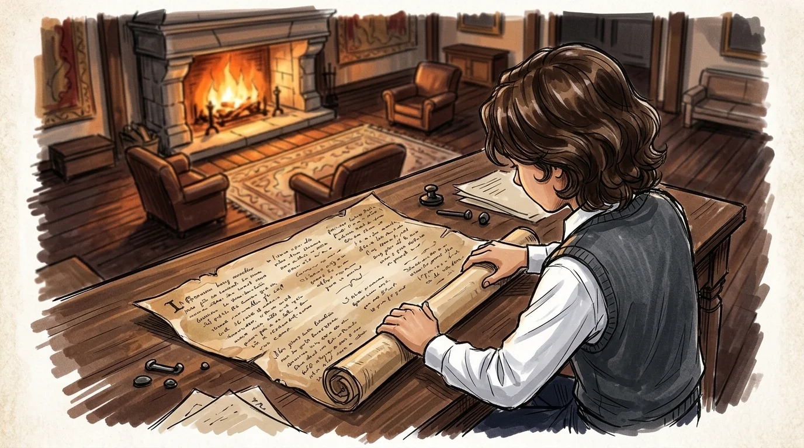

Hechicería y Magia · creación de personajes
Once escenas, de la carta al banquete. Al final, tu personaje listo para jugar.
Guía no oficial, hecha por fans y sin fines comerciales. Arte de GG. Música original de @rodrigesualdo.